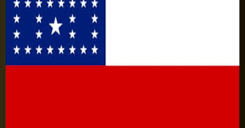

Amazonas
O Amazonas é um enorme estado no noroeste do Brasil, coberto quase pela Floresta Amazônica. A capital, Manaus, é um porto fluvial com marcos que datam do ciclo da borracha no final do século XIX, incluindo o Teatro Amazonas, uma grande casa de ópera. A cidade marca o "Encontro das Águas", onde as águas negras do Rio Negro e do Rio Solimões se encontram com o Rio Amazonas.

A área que hoje corresponde ao estado do Amazonas não pertencia a Portugal pelos limites definidos no Tratado de Tordesilhas, assinado entre Portugal e Espanha em 1494.
Após o descobrimento do Brasil, a região foi alvo de exploradores portugueses. O processo influenciou na decisão do Tratado de Madri, de 1750, que dava posse definitiva da região para a Coroa Portuguesa.
O decreto de criação da Província do Amazonas foi assinado por Dom Pedro II em 1850. O nome Amazonas é de origem indígena. Vem da palavra amassunu, que significa ruído das águas.
Foi o capitão espanhol Francisco Orelhana quem batizou a região após descer o Rio Amazonas em 1541. No percurso, encontrou grupos indígenas, com quem guerreou.
A ocupação da região ocorreu como resultado dos ciclos econômicos. Até o início do século XX, a exploração da borracha foi o chamariz para a introdução de vilas e povoados.
Após o sucesso da exploração da borracha por ingleses e holandeses em suas colônias na Malásia, a região enfrentou estagnação econômica.
O governo federal incentivou o crescimento a partir de 1950 e, em 1967 é criada a Zona Franca de Manaus, hoje denominado Polo Industrial de Manaus. O objetivo foi acelerar o processo de crescimento industrial da região.
Capital: Manaus
Área: 1.571 milhões de km²
População: 3.942 milhões (2022)
Código ISO 3166: BR-AM
O Amazonas possui uma rica e diversa cultura derivada das inúmeras tradições incorporadas pelos povos que compõem a sua população. Trata-se dos indígenas, dos africanos, dos europeus, principalmente portugueses, e dos migrantes de países vizinhos e de outras regiões do território brasileiro.
O Festival de Parintins acontece anualmente e é a principal e mais tradicional festa realizada no Amazonas, representando um grande atrativo para turistas do Brasil e do mundo. É uma celebração do folclore amazônico que envolve danças, músicas e encenações que giram em torno da rivalidade entre os bois-bumbás Garantido, representado pela cor vermelha, e Caprichoso, representado pela cor azul.
Festival de Parintins é representado pelos bois Caprichoso e Garantido e celebra o folclore amazonense.
Uma série de festas e festivais dedicados à música, ao cinema e ao folclore amazonense no geral são realizados por todo o estado. A cultura amazonense se manifesta também no artesanato, com a produção de peças diversas com base em matérias-primas naturais, como sementes, fibras, folhas e penas.
Muitos dos pratos típicos do estado levam peixes como pacu, tucunaré, tambaqui e outros pescados na sua composição, como o tacacá. Entre os frutos característicos do Amazonas, temos o guaraná e o açaí.